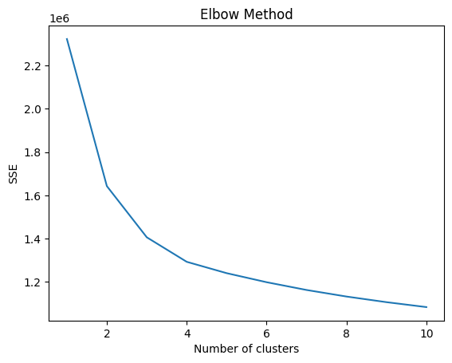
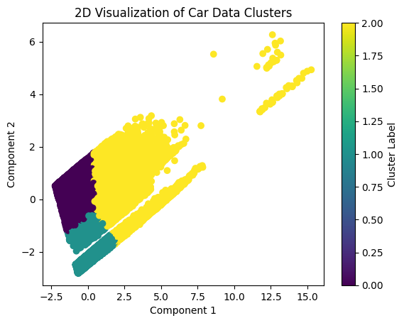

Car Price Prediction and Clustering
The goal of this project was to implement different approaches to see how accurate they are in predicting prices and to uncover hidden patterns in the data. In this project we looked at car data from Kaggle, accessible at this link
This dataset captures a wide range of attributes from vehicle sale transactions, including the year, make, model, trim, body type, transmission type, and Vehicle Identification Number. The idea behind using this dataset is to predict the selling prices of vehicles. By analysing and modelling this extensive data, we can identify the key factors that influence vehicle pricing and create an algorithm to predict the selling price based on other features. The effectiveness of our predictive models is measured by R² scores and Mean Squared Error (MSE) values, which indicate the accuracy of the models in predicting car prices. Higher R² scores and lower MSE values demonstrate the models' ability to capture and reflect the complexities of real-world vehicle pricing dynamics.
Preparation of the data
I used the following libraries for this analysis: Pandas, NumPy, Matplotlib and Scikit-learn. I started by preprocessing the data, addressing missing values, and splitting the dataset into training and testing sets to ensure a robust model evaluation.
Predicting the Car Prices
For the regression analysis, I used two different approaches: linear regression and random forest regression. I constructed a pipeline that included preprocessing steps, where numerical features were passed directly, and categorical features were transformed using one-hot encoding to make them interpretable for the models. The first model I used was a linear regression model, which is straightforward and provides a clear understanding of feature influences through its coefficients. However, the model's predictions have an average squared error of 41.1 million, indicating substantial deviations from actual selling prices. With an R² score of 0.547, the model explains about 54.7% of the variance in car selling prices from the selected features, which also isn’t enough.
Next, I implemented a random forest regressor, which is more complex and can capture non-linear relationships better than linear regression. This model was again part of a pipeline with similar preprocessing steps. Random forest, being an ensemble method that uses multiple decision trees and averages their predictions, tends to perform better on a wide range of data without severe overfitting. I compared its performance with the linear regression model using the same metrics, aiming to determine which model was more effective at predicting vehicle prices under the given data constraints. The Random Forest regressor significantly improves prediction accuracy with an MSE of ~2.24 million and explains ~97.53% of the variance in car selling prices (R² score).Predicted selling prices for the first five cars in the test set range from approximately $4,573 to $23,044, indicating varied price predictions across the dataset.
Clustering
After completing the regression analysis, I moved on to clustering. Here, my goal was to identify inherent groupings within the vehicle data that could be useful for segmenting the market or understanding customer preferences. I applied the KMeans clustering algorithm and used the Elbow Method to determine the optimal number of clusters by analyzing the sum of squared errors (SSE) for different cluster counts. The optimal point—where the SSE reduction slowed significantly—indicated the most appropriate number of clusters. In this case this was 4 clusters.
Visualisation of the Clusters
To facilitate the interpretation of these clusters, I employed dimensionality reduction via Truncated SVD, reducing the dataset to two principal components. This reduction was crucial for visualizing the data in a 2D space, allowing me to plot the clusters and observe how well-separated and cohesive they were.
Overall, my approach was designed to not only predict vehicle prices accurately using two different regression models but also to uncover patterns and segments within the data . Through this comprehensive analysis, I aimed to provide actionable insights that could enhance business understanding related to vehicle sales.